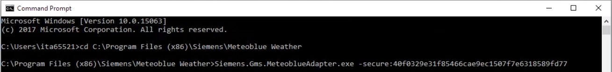

Meteoblue Weather Integration
Meteoblue Weather is the extension of the Meteoblue adapter. The Meteoblue adapter allows Desigo CC to integrate weather data provided by the Meteoblue weather forecast service. In particular, the adapter connects to the forecast service to read the requested information. It can be installed on a remote computer different from the Desigo CC server.

The adapter is not part of the Desigo CC installation. After installation, the adapter installer package (MSI) is available in [Installation Drive]:\[Installation Folder]\GMSMainProject\AddSW\MeteoblueWeather. Once you install and start this software service, the adapter is ready to be executed and used in Desigo CC. For instructions, see Installing and Starting the Meteoblue Weather Adapter.
To integrate the Meteoblue adapter, a SORIS driver and a SORIS network (monitored by one SORIS driver) must be created and configured. For instructions, see Integrating Meteoblue Weather.
Once the adapter object is created, it starts automatically as a Windows service using the http or https protocol. You can also start the adapter manually:
- Using the http protocol: double-click the executable Siemens.Gms.MeteoblueAdapter.exe available in the file system with the installation.
- Using the https protocol: enter –secure:[thumbprint] by command line.

For each adapter created, it is necessary to configure the URL IP address of the computer from which the network adapter is run. For instructions, see Integrating Meteoblue Weather.
If the adapter is connected but any forecasts values are unavailable or not applicable:
- The corresponding property does not display in the Operation tab.
- -9999 displays in the Extended Operation tab.
If the adapter is disconnected, all the properties in the Extended Operation tab display #COM.
Historical Data
Weather forecasts historical data can be enabled for historical/statistical/graphical purposes. For each location, you can manually enable this feature for a set of different properties. For instructions, see Enabling Weather Forecast Historical Data.
If a log status is not enabled, the corresponding property will not display in the Operation tab, while -9999 will display in the Extended Operation tab.
Dependencies
The Meteoblue Weather extension is configured to depend on the following extensions, which will be automatically added, if they are not already installed in the system, when the Meteoblue Weather installation feature is selected:
- SORIS Driver (see SORIS)
- Weather Forecast library (see Weather Forecast)